Rhodes → Bondi Junction · real fixture data · clock pinned 09:21 / 09:47 · 2026-09-01
Judged side-by-side against the calibration exemplar (B·Editorial). Scenarios: hero on time · tight first leg 5 min late, change window 7→2 · cancelled second leg cancelled, real 10:12 replacement · long nothing abbreviated · board / boarddeparted / onboard for the focus surfaces. Sizes 390×844 and 412×732; one light shot per hero.
Calibration exemplar
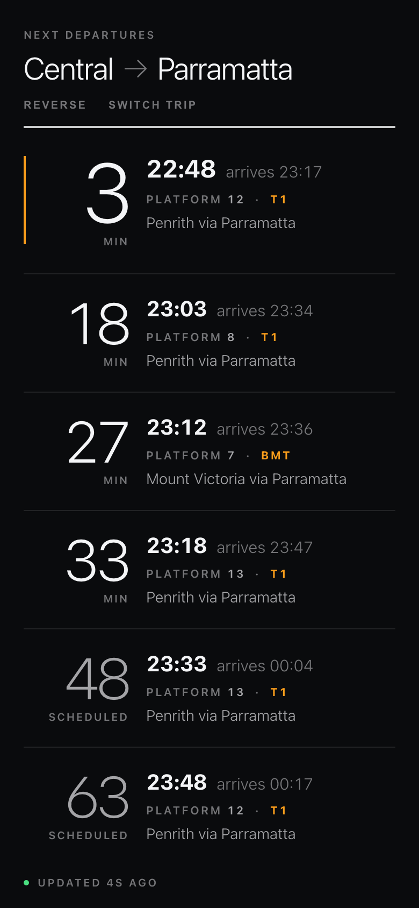
B · Editorial (shipped board)
A1 · Ledger — journey detail
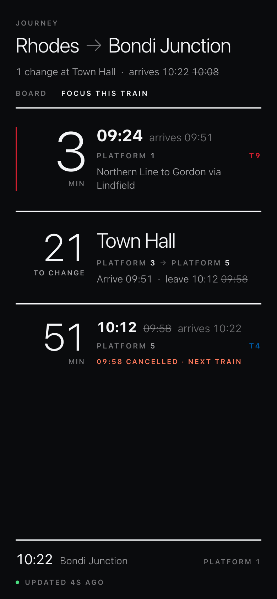
390x844-cancelled
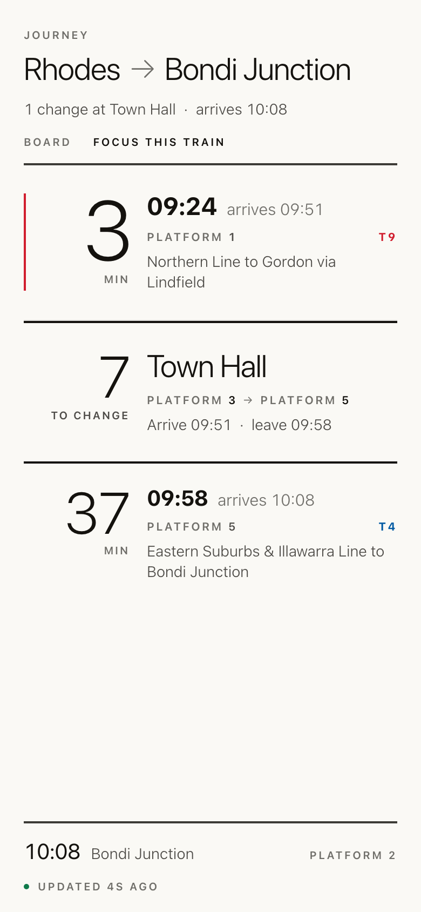
390x844-hero-light
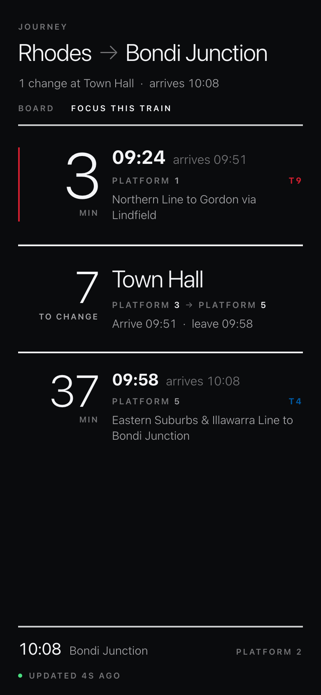
390x844-hero
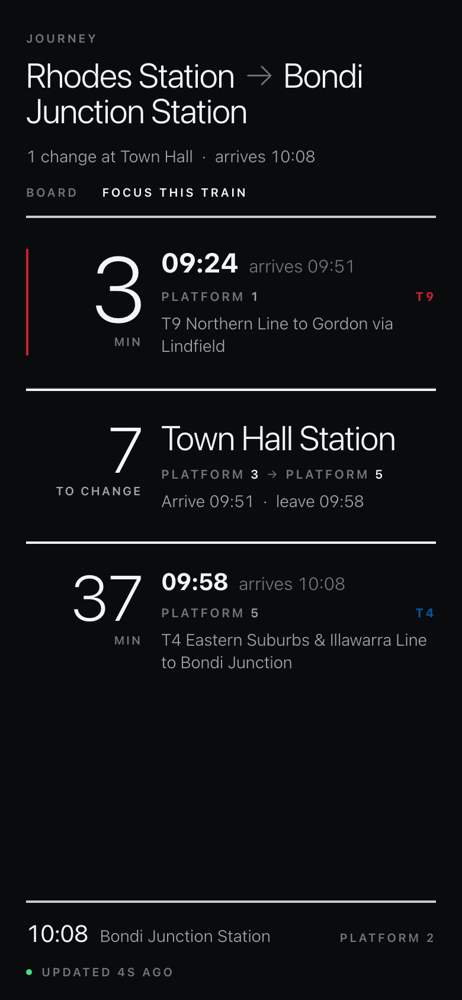
390x844-long
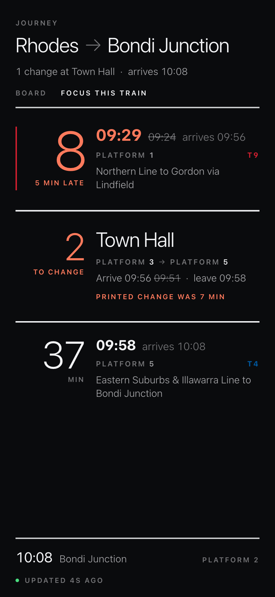
390x844-tight
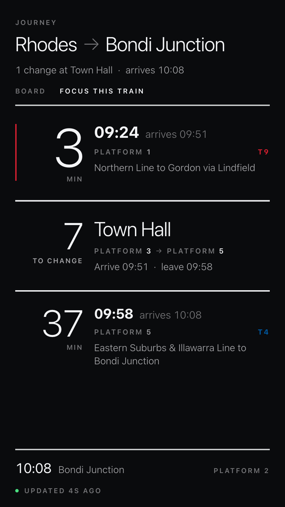
412x732-hero
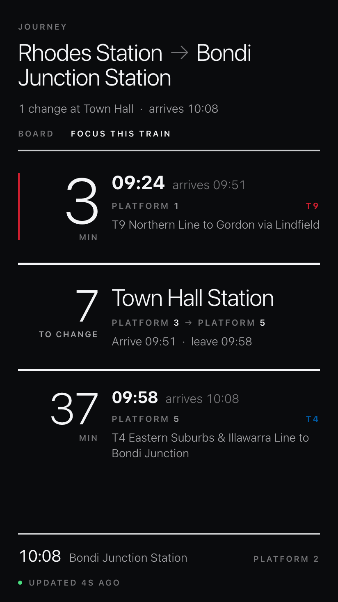
412x732-long
A2 · Spine — journey detail
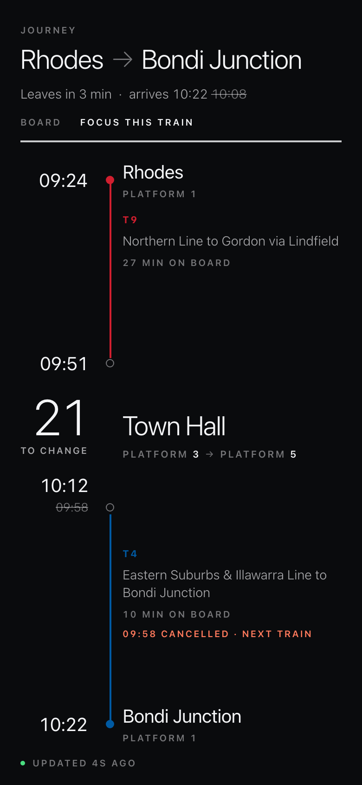
390x844-cancelled
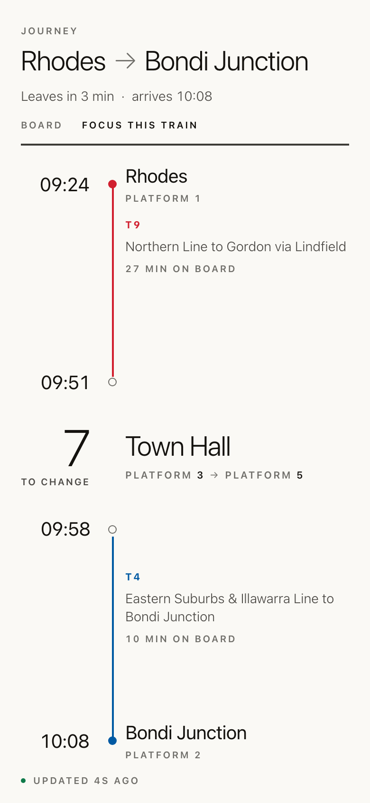
390x844-hero-light
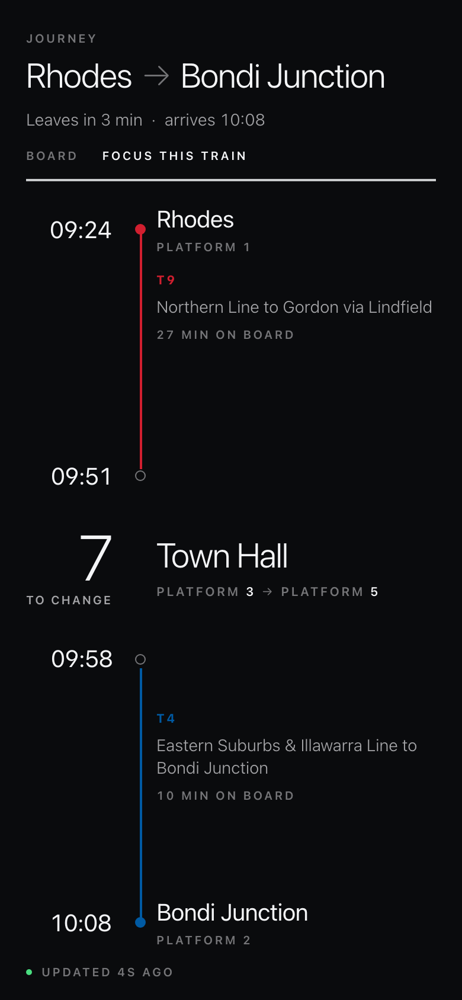
390x844-hero
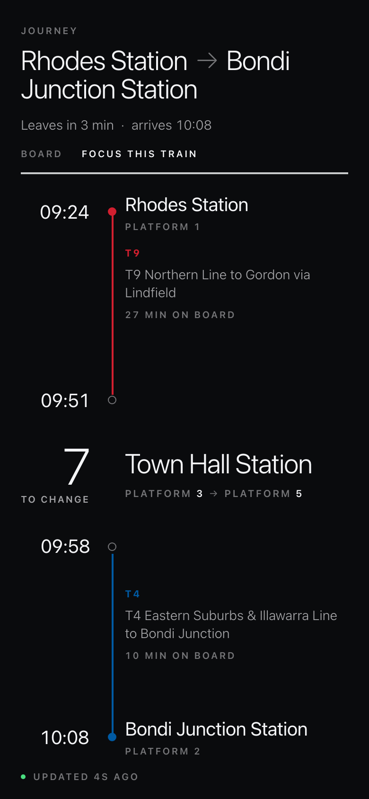
390x844-long
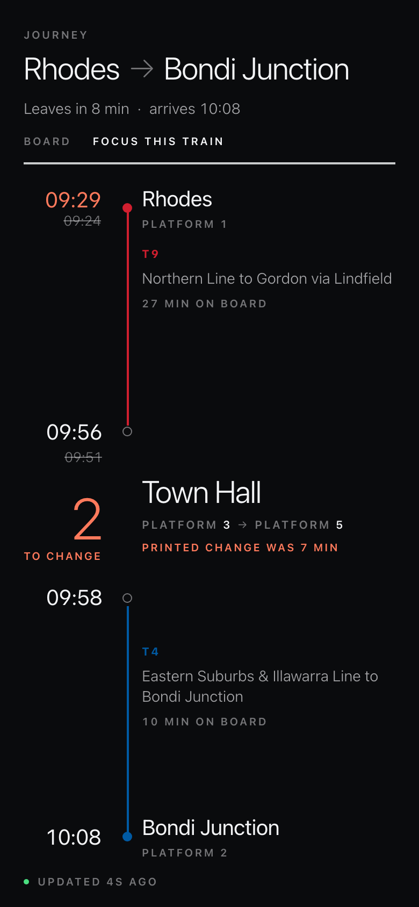
390x844-tight
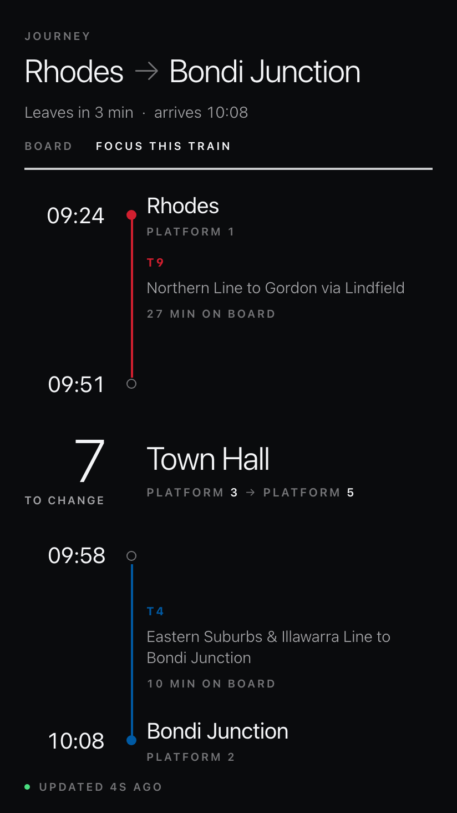
412x732-hero
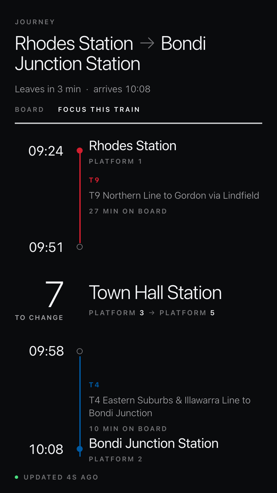
412x732-long
A3 · Change first — journey detail (the brave one)